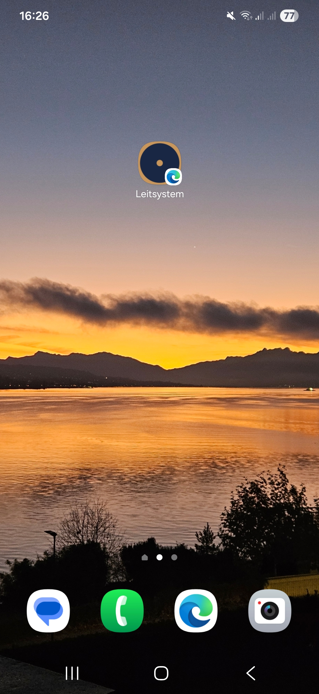

86
86
⋮
Häufig gesucht
1 gefunden
∧
D
Dörfler AG Test
+41 44 505 74 20
Letzte
1 gefunden
∧
Dörfler AG Test
20. Apr.
✨
🖼
🙂
📋
⚙
⋯
1
2
3
4
5
6
7
8
9
0
q
w
e
r
t
z
u
i
o
p
ü
a
s
d
f
g
h
j
k
l
ö
ä
⇧
y
x
c
v
b
n
m
⌫
!#1
,
Deutsch
.
🔍
🎤
86
Wird angerufen…
Stark Haustechnik GmbH
Zürich
Anruf hinzu
Video
Bluetooth
Lautsprecher
Stumm
Tastatur
86
Anruf beendet ·
03:11
Dörfler AG Test
043 443 52 00
Kontakt anzeigen
|||
○
<
86
←
Stark GmbH
Sonntag, 20. April ·
08:39
Ihre Meldung wurde aufgenommen. Hier können Sie die Daten prüfen und Fotos ergänzen:
flowsight.ch/v/
SH
0088
08:39
✓✓
Erinnerung — Ihr Termin ist morgen um
09:00
Uhr,
Bahnhofstrasse 15
. Bei Fragen:
+41 44 505 74 21
.
09:00
✓✓
Vielen Dank für Ihr Vertrauen. Über eine kurze Bewertung freuen wir uns:
flowsight.ch/r/DA-0050?t=…
09:31
✓✓
💬
Stark GmbH
Ihre Meldung wurde aufgenommen. Hier können Sie die Daten...